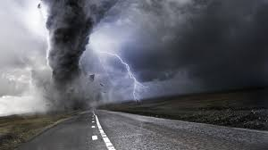
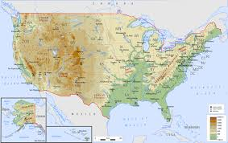

|
|
Project - 4 :
|
 |
|  |
Data Description :[1] The United States of America (USA), commonly known as the United States (U.S. or US) or America, is a country comprising 50 states, a federal district, five major self-governing territories, and various possessions. [2] Tornadoes are more common in the United States than in any other country. The United States receives more than 1,200 tornadoes annually—four times the amount seen in Europe. [3] Data Source : https://www.ncdc.noaa.gov/stormevents/ftp.jsp |
Programming language : " Python " |